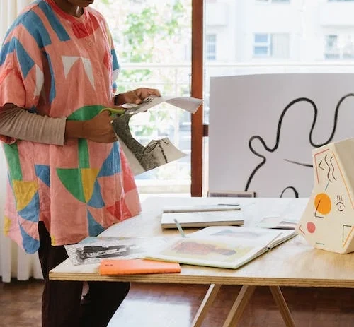

Parcerias
Estamos buscando pessoas que abracem essa ideia conosco! Nós sabemos que toda criança sonha com um material escolar, mas nem todas têm condições de comprar um simples caderno e pensando nisso a Vira Papel fará doações anuais de cadernos e gostariamos de contar com a ajuda de Artistas para desenvolver as capas dos cadernos para deixar a experiência da criançada ainda mais especial
